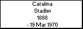
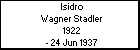

l i n k s
Siblings:
Martin Wagner Stadler
Matilde Wagner Stadler
Maria Wagner Stadler
Nilda Wagner Stadler
Pedro Wagner Stadler
Ricardo Hector Wagner Stadler
Ana Wagner Stadler
Lidia Wagner Stadler
Elisa Wagner Stadler
Isidro Wagner Stadler
Born: 1922, Argentina
Died: 24 Jun 1937, Loberia - Bs.Aires - Argentina
Generated by
GenDesigner 2.0 beta 3.6